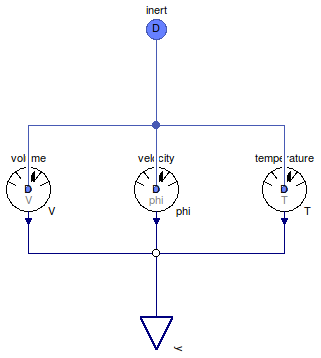

Table of Contents
- User's Guide
- BCs**
- Sensors
- Assemblies**
- Regions**
- Subregions
- Connectors
- Characteristics
- Units
- Quantities
- BaseClasses
- **Please check back soon or contact kdavies4 at gmail.com.
Download
- Latest: FCSys-2.0.zip (**Check back soon.)

| Name | Description |
|---|---|
| Species | Sensor for the InertDalton connector, e.g., of a Species model |
| Volume | Measured volume |
| Measured velocity | |
| Temperature | Measured temperature |
| Base classes (not for direct use) |

| Type | Name | Default | Description |
|---|---|---|---|
| Integer | n_lin | 1 | Number of components of linear momentum (nlin) |
| Type | Name | Description |
|---|---|---|
| InertDalton | inert | Single-species connector for linear momentum and heat, with additivity of pressure |
| RealOutputBus | y | Input bus for external signal sources |
model Species "Sensor for the InertDalton connector, e.g., of a Species model" extends FCSys.BaseClasses.Icons.Sensor; parameter Integer n_lin( final min=0, final max=3) = 1 "Number of components of linear momentum (nlin)";Volume volume(final n_lin=n_lin) "Sensor for volume"; Velocity velocity(final n_lin=n_lin) if n_lin > 1 "Sensor for velocity"; Temperature temperature(final n_lin=n_lin) "Sensor for temperature"; FCSys.Connectors.InertDalton inert(final n_lin=n_lin) "Single-species connector for linear momentum and heat, with additivity of pressure"; FCSys.Connectors.RealOutputBus y "Input bus for external signal sources"; equationconnect(volume.inert, inert); connect(volume.y, y.V); connect(velocity.inert, inert); connect(velocity.y, y.phi); connect(temperature.inert, inert); connect(temperature.y, y.T); end Species;

| Type | Name | Default | Description |
|---|---|---|---|
| Integer | n_lin | 1 | Number of components of linear momentum (nlin) |
| Type | Name | Description |
|---|---|---|
| InertDalton | inert | Connector for linear momentum and heat, with additivity of pressure |
model Volume "Measured volume" extends BaseClasses.PartialSensor(redeclare FCSys.Connectors.RealOutput y( final unit="l3")); equation y = inert.V;end Volume;
| Type | Name | Default | Description |
|---|---|---|---|
| Integer | n_lin | 1 | Number of components of linear momentum (nlin) |
| Type | Name | Description |
|---|---|---|
| InertDalton | inert | Connector for linear momentum and heat, with additivity of pressure |
| output RealOutput | y[n_lin] | Measurement [l/T] |
model Velocity "Measured velocity" extends FCSys.BaseClasses.Icons.Sensor; parameter Integer n_lin( final min=0, final max=3) = 1 "Number of components of linear momentum (nlin)";FCSys.Connectors.InertDalton inert(final n_lin=n_lin) "Connector for linear momentum and heat, with additivity of pressure"; FCSys.Connectors.RealOutput y[n_lin](final unit="l/T") "Measurement"; equation // Measurement y = inert.phi; // Conservation (no storage) 0 = inert.p "No (additional) pressure"; zeros(n_lin) = inert.mPhidot "No force"; 0 = inert.Qdot "Adiabatic";end Velocity;
| Type | Name | Default | Description |
|---|---|---|---|
| Integer | n_lin | 1 | Number of components of linear momentum (nlin) |
| Type | Name | Description |
|---|---|---|
| InertDalton | inert | Connector for linear momentum and heat, with additivity of pressure |
model Temperature "Measured temperature" extends FCSys.Sensors.InertDalton.BaseClasses.PartialSensor(redeclare FCSys.Connectors.RealOutput y(final unit="l2.m/(N.T2)", displayUnit="K")); equation y = inert.T;end Temperature;